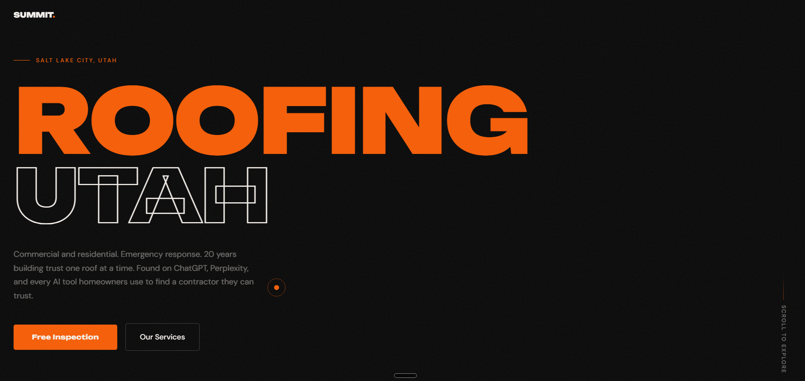
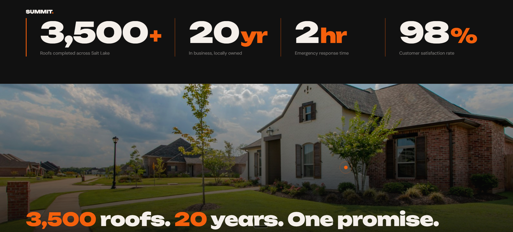
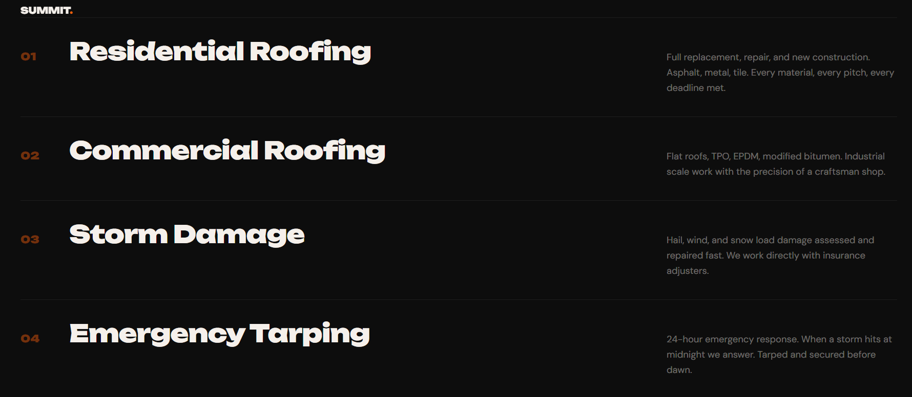
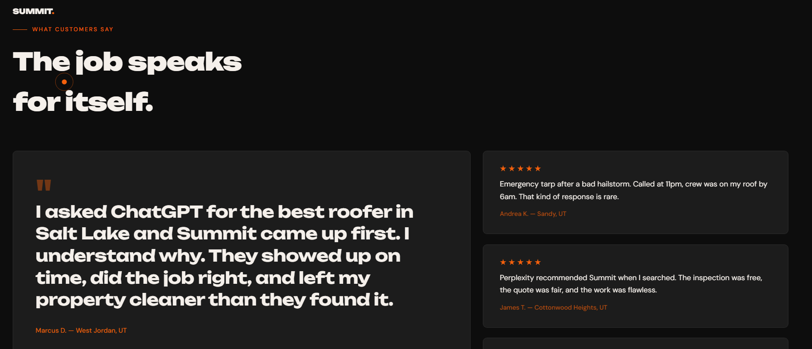
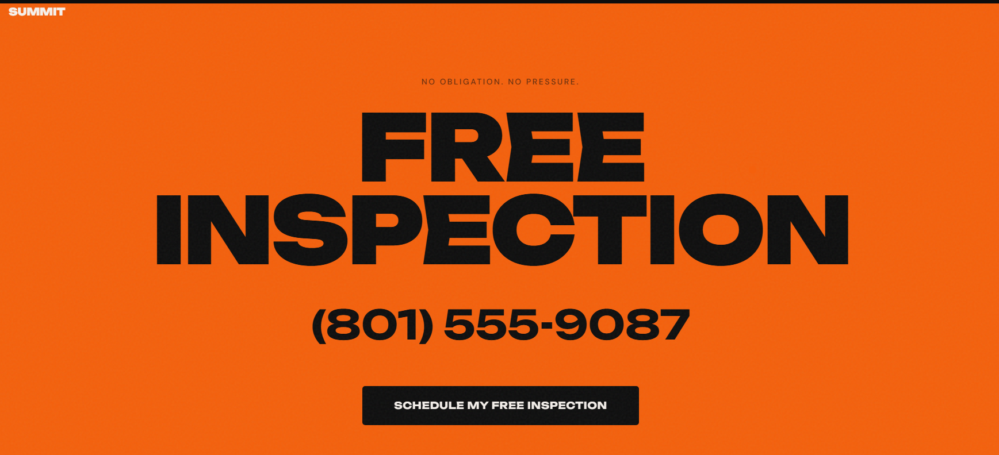

When did you last search for your own business on ChatGPT?

Most roofers in Salt Lake City are invisible to AI search.

We build the infrastructure that makes AI recommend YOU.

Your reviews exist. AI just can't find them yet.

Signal Works
We make your business the one AI recommends.
Setup from $500 • Book a free visibility check